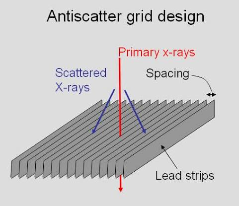
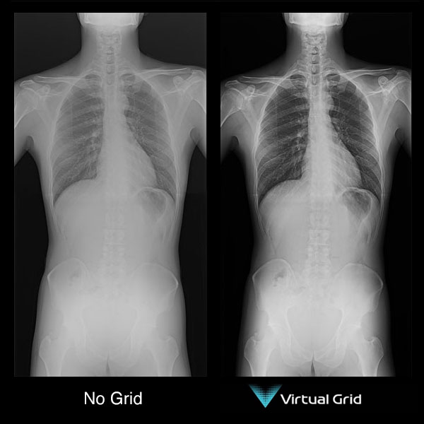

Physical anti-scatter grids have been used in X-ray imaging for decades to reduce the amount of scattered radiation reaching the detector. Scatter reduces image contrast and can make anatomical details harder to see.
But physical grids also come with some limitations. They can be difficult to use in some situations, especially during portable X-rays. This created a need for a simpler way to reduce the effect of scatter.

Why Was There a Need for an Alternative to Physical Grids?
Physical grids work well, but they are not always convenient.
1. They Can Increase Radiation Dose
A physical grid not only absorbs scattered radiation, but it also absorbs some of the useful primary X-rays.
Because fewer X-rays reach the detector, exposure factors may need to be increased to obtain an adequate image. This can increase the patient's radiation exposure.
This became an important concern because modern radiography aims to achieve diagnostic image quality with the lowest reasonable radiation dose.
2. Correct Positioning Is Important
A physical grid has to be properly aligned with the X-ray beam and detector.
If the alignment is incorrect, grid cutoff can occur. This means that useful radiation is unintentionally absorbed by the grid, causing parts of the image to appear underexposed or uneven.
So, a grid can improve contrast, but only when it is used correctly.
3. Portable X-rays Make Grid Use More Difficult
This is one of the biggest reasons virtual grids became interesting.
In a routine X-ray room, positioning a grid is relatively straightforward. But imagine doing an X-ray at the bedside of a critically ill patient.
The patient may not be able to move. The detector has to be positioned under or behind the patient, and maintaining the correct alignment between the tube, grid, and detector can be difficult.
A physical grid can therefore make bedside imaging more complicated and can increase the risk of grid cutoff or the need for a repeat exposure.
4. Digital Radiography Created New Possibilities
With digital radiography, the image can be processed after acquisition.
This opened the door to a different approach:
Instead of physically stopping scatter with a grid, why not estimate the scatter and reduce its effect using software?
That is the basic idea behind virtual grids or software-based scatter correction.
So, What Exactly Is a Virtual Grid?
A virtual grid is not a physical grid placed between the patient and detector.
The X-ray image is acquired without a conventional grid. Software then estimates the contribution of scattered radiation and processes the image to reduce its effect.

In simple words:
The aim is to obtain improved image contrast without the physical grid.
Does This Mean Physical Grids Are No Longer Needed?
No.
This is an important point.
Virtual grids were developed because physical grids have limitations, not because physical grids stopped working.
Studies show that scatter-correction software can improve image quality compared with gridless imaging and may help reduce radiation dose in some situations. It can be particularly useful for bedside, trauma, and ICU imaging where using a physical grid can be difficult.
However, physical grids can still provide better image quality in some situations, particularly when imaging thicker body parts or when optimal positioning is possible.
A 2026 study of mobile chest radiography found that software scatter correction performed well across several phantom sizes, while the physical grid remained superior for the thickest phantom.
So the question is not:
“Which one will completely replace the other?”
It is:
“Which one is more appropriate for this examination?”
Physical Grid vs Virtual Grid
| Physical Grid | Virtual Grid |
|---|---|
| Physically reduces scatter before it reaches the detector. | Uses software to reduce the effect of scatter. |
| Can require higher exposure because it absorbs some primary radiation. | Can allow gridless acquisition and potentially lower dose. |
| Requires accurate positioning and alignment. | No physical grid alignment is required. |
| Can cause grid cutoff if incorrectly aligned. | Eliminates physical grid cutoff. |
| Useful when high scatter rejection is required. | Particularly useful when physical grid use is difficult. |
| Can provide excellent image quality. | Image quality depends on the software and clinical situation. |
The Bottom Line
Physical grids are not being replaced because they are ineffective.
They are being supplemented by a newer approach because modern radiography also has to consider radiation dose, workflow, patient positioning and the challenges of portable imaging.
Virtual grids offer a way to manage scatter without physically placing a grid.
So, rather than thinking of virtual grids as the “replacement” for physical grids, think of them as another tool in the radiographer's toolbox.
The best choice depends on the patient, examination, imaging conditions and the required image quality.
Sources
1. Sayed M, Knapp KM, Fulford J, Heales C, Alqahtani SJ. The principles and effectiveness of X-ray scatter correction software for diagnostic X-ray imaging: A scoping review. European Journal of Radiology. 2023;158:110600. DOI
2. ACR–AAPM–SIIM. Practice Guideline for Digital Radiography. Full guideline
3. Prapan A, Poontein C, Pongsar C, et al. A comparison of scatter correction software and physical grid in supine chest radiography using a mobile X-ray system across different phantom sizes. Radiography. 2026;32(3):103354. DOI